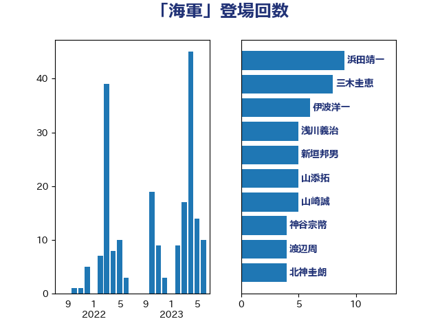

単語「海軍」

| 浜田靖一 | 自由民主党 | 9 回 |
| 三木圭恵 | 日本維新の会 | 8 回 |
| 伊波洋一 | 無所属 | 6 回 |
| 浅川義治 | 日本維新の会 | 5 回 |
| 新垣邦男 | 立憲民主党 | 5 回 |
| 山添拓 | 日本共産党 | 5 回 |
| 山崎誠 | 立憲民主党 | 5 回 |
| 神谷宗幣 | 参政党 | 4 回 |
| 渡辺周 | 立憲民主党 | 4 回 |
| 北神圭朗 | 無所属 | 4 回 |
| 佐藤正久 | 自由民主党 | 4 回 |
| 井坂信彦 | 立憲民主党 | 4 回 |
| 上田清司 | 国民民主党 | 4 回 |
| 末松義規 | 立憲民主党 | 3 回 |
| 有村治子 | 自由民主党 | 3 回 |
| 和田有一朗 | 日本維新の会 | 3 回 |
| 古川康 | 自由民主党 | 3 回 |
| 野田佳彦 | 立憲民主党 | 2 回 |
| 猪瀬直樹 | 日本維新の会 | 2 回 |
| 林芳正 | 自由民主党 | 2 回 |
| 小西洋之 | 立憲民主党 | 2 回 |
| 大塚耕平 | 国民民主党 | 2 回 |
| 國場幸之助 | 自由民主党 | 2 回 |
| 鬼木誠 | 立憲民主党 | 1 回 |
| 青山繁晴 | 自由民主党 | 1 回 |
| 阿部知子 | 立憲民主党 | 1 回 |
| 赤嶺政賢 | 日本共産党 | 1 回 |
| 荒井優 | 立憲民主党 | 1 回 |
| 臼井正一 | 自由民主党 | 1 回 |
| 緒方林太郎 | 無所属 | 1 回 |
| 福山哲郎 | 立憲民主党 | 1 回 |
| 石破茂 | 自由民主党 | 1 回 |
| 浅野哲 | 国民民主党 | 1 回 |
| 比嘉奈津美 | 自由民主党 | 1 回 |
| 櫻井周 | 立憲民主党 | 1 回 |
| 榛葉賀津也 | 国民民主党 | 1 回 |
| 松原仁 | 立憲民主党 | 1 回 |
| 日下正喜 | 公明党 | 1 回 |
| 小野寺五典 | 自由民主党 | 1 回 |
| 宮本徹 | 日本共産党 | 1 回 |
| 塩川鉄也 | 日本共産党 | 1 回 |
| 城内実 | 自由民主党 | 1 回 |
| 和田政宗 | 自由民主党 | 1 回 |
| 吉田宣弘 | 公明党 | 1 回 |
| 勝部賢志 | 立憲民主党 | 1 回 |
| 加藤勝信 | 自由民主党 | 1 回 |
| 井上哲士 | 日本共産党 | 1 回 |
| 中川郁子 | 自由民主党 | 1 回 |